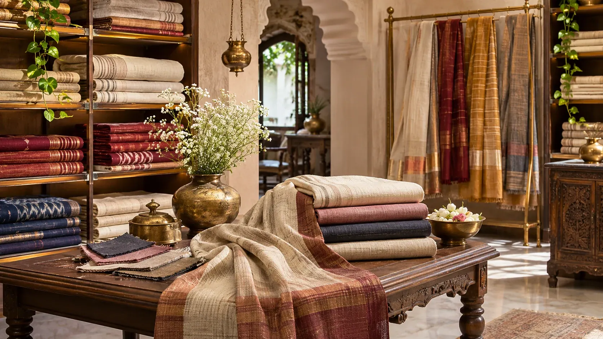
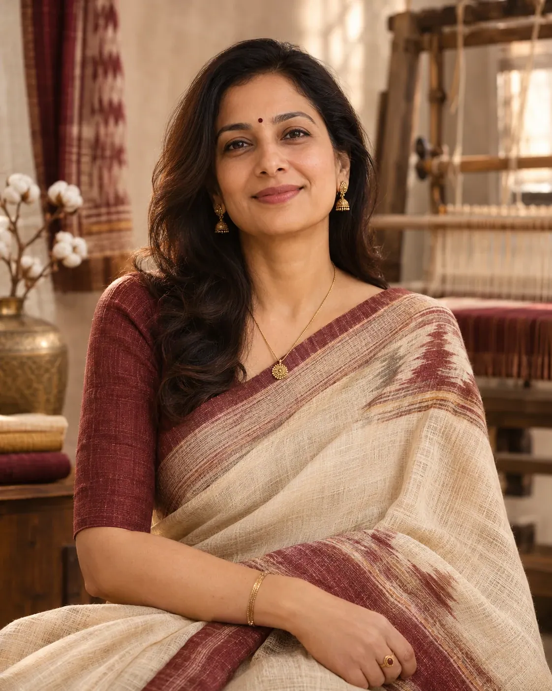
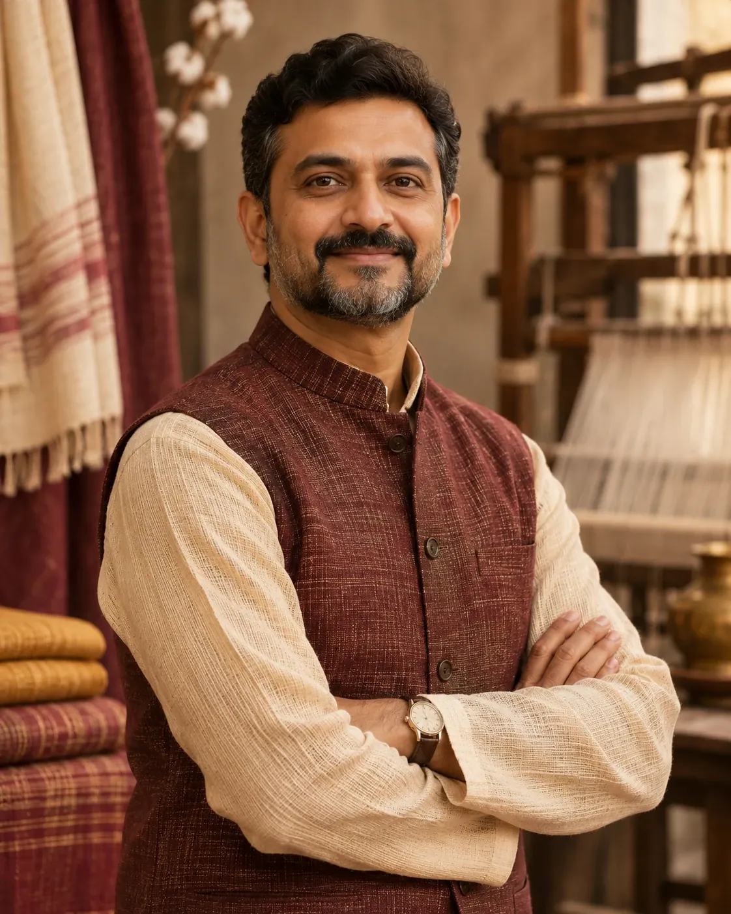
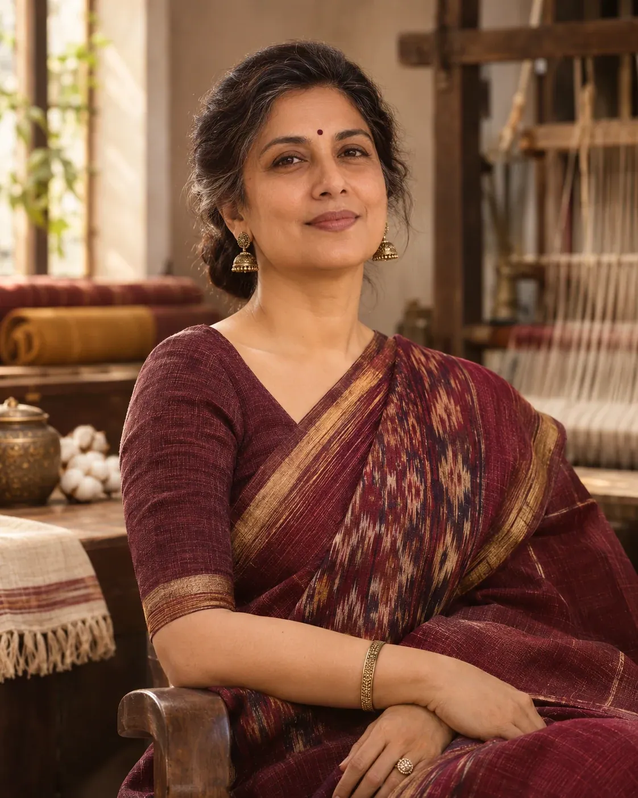
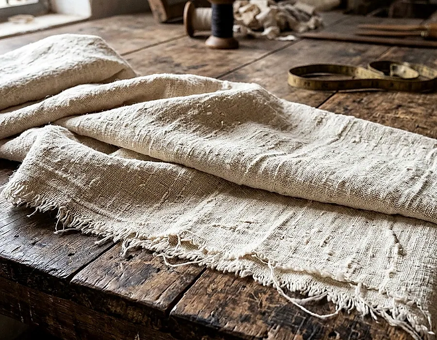

Material clarity
Say what fibers and treatments are known; flag what still needs confirmation.
NOOLMAYAM is a concept textile showroom built around a simple idea: good design starts with material knowledge and respect for making.

We believe textile shopping should be informed, not hurried. Understanding fiber, weave, dimensions, care and provenance brings confidence to every purchase decision.
An honest product description matters as much as a beautiful picture.
Say what fibers and treatments are known; flag what still needs confirmation.
Recognize the difference between handloom, hand-spinning and certified Khadi.
Give customers real decision-making information: dimensions, weight, use and care.
Bring traditional craft knowledge into wardrobes and spaces people use today.
A visual illustration of three roles that guide a heritage textile store. Portraits and profiles are conceptual, not verified NOOLMAYAM personnel.

Sets the vision for a heritage-first selection of cloth, balancing material literacy with contemporary design.

Focuses on careful textile descriptions, customer enquiries, collection presentation and day-to-day service.

Shapes the editorial language, styling and presentation of stories rooted in Indian handloom traditions.

For an everyday shirt, an occasion saree, or a cushion that makes a room feel settled, choosing fabric becomes easier when we understand its behavior and construction.
Read the journalNOOLMAYAM blends cultural richness with thoughtful product guidance, helping visitors appreciate fabric not only for how it looks, but for how it lives, drapes and lasts.
Our catalogue is conceived around transparency in descriptions and curiosity about the craft.
Clear fibre information matters more than unverified labels or fashionable claims.
We do not assign invented artisan identities or certification claims to illustrative products.
A textile deserves storage and cleaning advice matched to its actual composition.